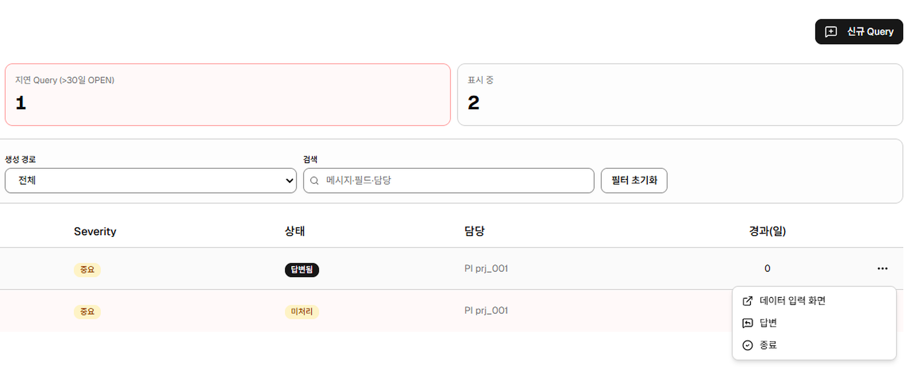
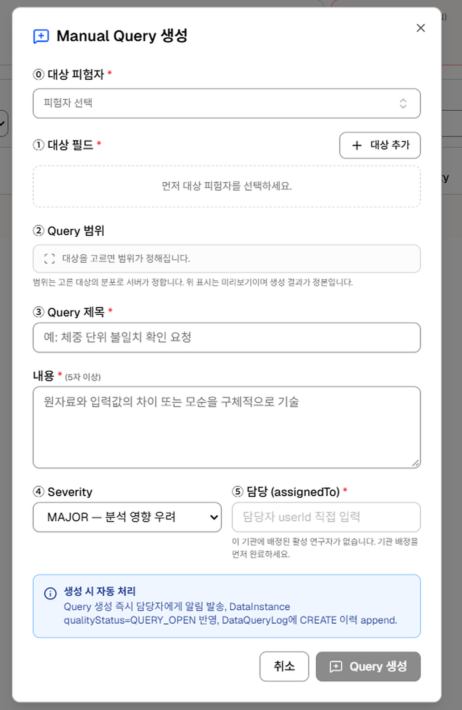
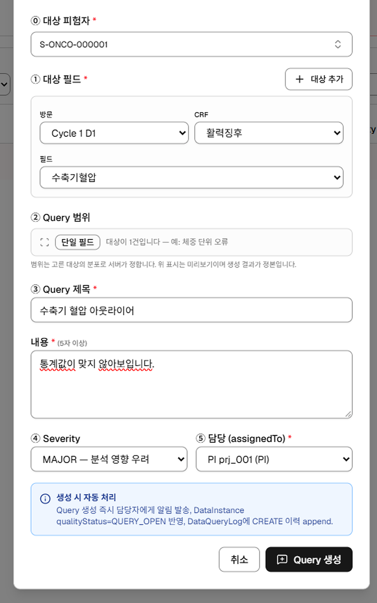
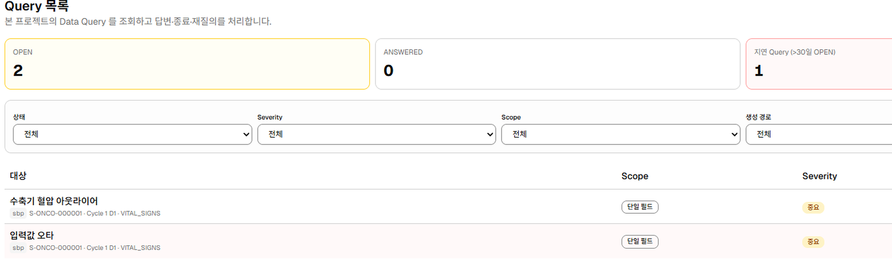
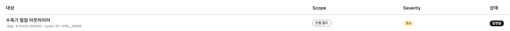
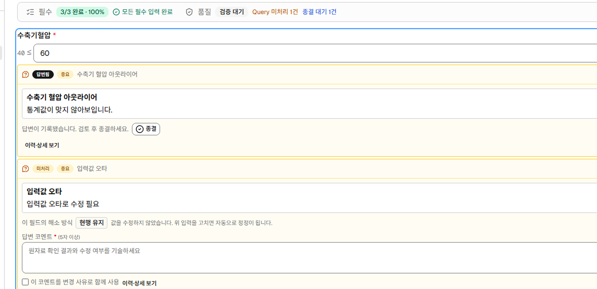
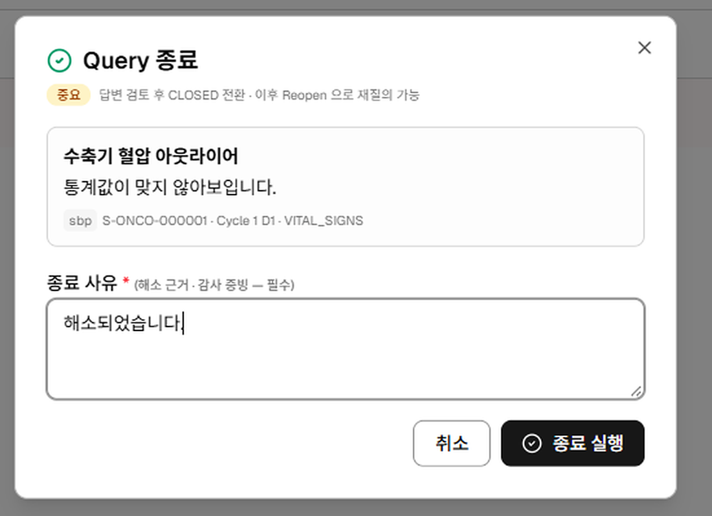
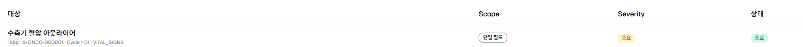
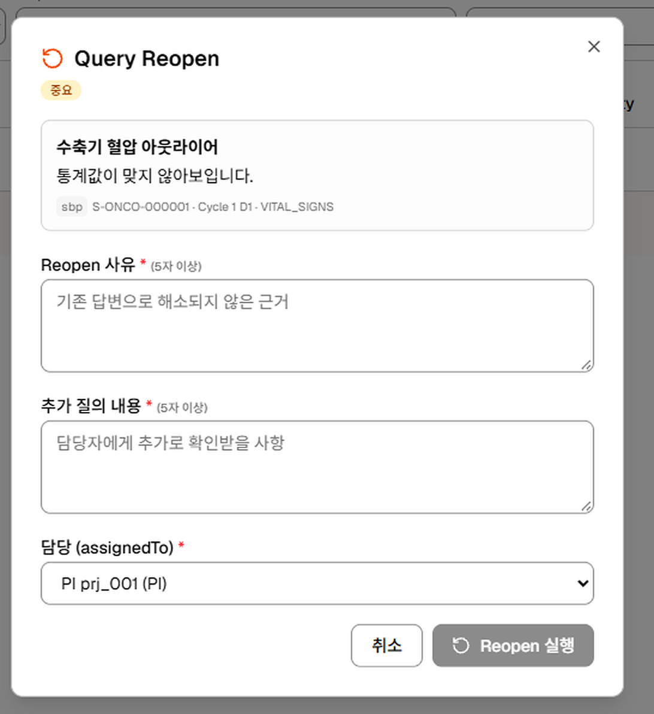
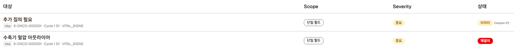

Query
SCR-QA-003·004·005·006·007 · 목록 · 생성 · 답변 · 종료 · 재질의
Query 목록
- 1.1화면 구성
- 1.2행 액션 메뉴
1.1화면 구성
개요
입력된 자료에 대한 확인 요청(Query)을 한곳에서 처리하는 화면입니다. 위에서부터 집계 카드 · 필터 · 목록 순으로 놓여 있고, 목록의 각 행이 Query 한 건입니다. 답변 · 종료 · 재질의가 모두 이 화면에서 시작하며, 처리는 행 오른쪽 끝의 액션 메뉴로 수행합니다 1.2.
화면 설명

상태 필터 — 미처리 · 답변됨 · 종료 등으로 좁힙니다.
Severity 필터 — 경미 · 중요 · 치명으로 좁힙니다.
Scope 필터 — 범위로 좁힙니다.
생성 경로 필터 — 자동(규칙) 과 수동 으로 좁힙니다. 자동은 검증 규칙이 만든 Query 입니다.
제목 아래 안내 — “본 프로젝트의 Data Query 를 조회하고 답변·종료·재질의를 처리합니다.”
OPEN — 아직 답변되지 않은 건수입니다.
ANSWERED — 답변은 왔으나 아직 종료되지 않은 건수입니다.
지연 Query (>30일 OPEN) — 만들어진 지 30일이 넘도록 답변이 없는 건수입니다. 답변된 건은 아무리 오래돼도 여기에 들어가지 않습니다.
대상 열 — Query 제목입니다. 제목을 선택하면 Query 상세로 이동해 처리 이력과 대상별 해소 상태를 확인할 수 있습니다.
Scope 열 — 단일 필드 · 교차 필드 · 교차 CRF · 교차 Visit 4종입니다.
Severity 열 — 경미 · 중요 · 치명 3종입니다.
제목 아래 작은 글자가 필드 · 피험자 · 방문 · CRF 입니다 — 어느 자료에 걸린 Query 인지 여기에서 확인합니다.
Query 상태 6종
| 상태 | 뜻 | 다음에 할 일 |
|---|---|---|
| 미처리 | 답변을 기다리는 상태 | 담당자가 답변 |
| 답변됨 | 답변이 등록된 상태 | 데이터 관리자가 종료 |
| 부분 답변 | 여러 대상 중 일부만 해소된 상태 | 남은 대상을 마저 처리 |
| 종료 | 해소가 확인된 상태 | 없음 — 필요하면 재질의 |
| 재질의 | 종료했다가 다시 질의한 상태 | 새로 생긴 Query 에 답변 |
| 취소 | 폐기된 Query | 없음 — 이 화면에 취소 기능은 없습니다 |
유의사항
오해하기 쉬운 동작
- • 감사자는 이 화면을 읽을 수만 있습니다. 처리 권한(생성 · 답변 · 종료 · 재질의)을 하나도 갖지 않은 사용자에게는 모든 액션이 비활성으로 표시됩니다. 프로젝트가 종료 · 보관 상태일 때도 같습니다.
1.2행 액션 메뉴
개요
1.1 과 같은 화면의 오른쪽 영역입니다. Query 처리는 행마다 따로 하며, 행 오른쪽 끝의 ⋯ 를 선택하면 메뉴가 열립니다. 그 행의 상태와 내 권한에 따라 항목이 달라집니다 — 캡처는 답변됨 행이라 답변과 종료가 함께 보이고, 재질의는 보이지 않습니다. 재질의는 종료 된 행에서만 열립니다.
화면 설명

신규 Query — 사람이 직접 Query 를 만듭니다 2.1. 연구책임자 · 모니터요원 · 데이터 관리자에게만 표시됩니다.
검색 — 메시지 · 필드 · 담당으로 좁힙니다.
필터 초기화 — 걸어 둔 조건을 한 번에 풉니다.
⋯ — 그 행의 액션 메뉴를 엽니다. 할 수 있는 일이 하나도 없으면 ⋯ 자체가 표시되지 않습니다.
데이터 입력 화면 — 그 Query 가 가리키는 CRF 입력 화면으로 이동합니다 3.2. 읽기 이동이라 권한과 무관하게 표시되며, 감사자도 사용할 수 있습니다.
답변 — 답변 창을 엽니다 3.1. 미처리 · 답변됨 · 재질의 상태에서 열립니다.
종료 — 종료 창을 엽니다 4.1. 답변됨 상태에서만, 데이터 관리자에게만 열립니다.
지연 Query (>30일 OPEN) 카드 — 1.1 에서 설명한 집계의 나머지입니다.
표시 중 — 필터를 적용한 뒤 지금 화면에 보이는 건수입니다. 앞의 세 카드와 기준이 다릅니다.
생성 경로 필터 — 자동(규칙) · 수동으로 좁힙니다.
상태 열 — 메뉴에 무엇이 뜰지는 이 값이 정합니다.
담당 열 — 답변은 담당자 또는 등록자만 할 수 있습니다.
경과(일) 열 — 만들어진 날로부터 지난 일수입니다. 30일을 넘긴 미처리 건은 행 전체가 붉게 표시됩니다.
첫 행은 답변됨 이라 답변 · 종료가 함께 열렸습니다.
둘째 행은 미처리 라 같은 메뉴를 열면 종료가 빠지고 답변만 표시됩니다.
유의사항
오해하기 쉬운 동작
- • 「데이터 입력 화면」 항목이 보이지 않는 Query 도 있습니다. 그 Query 에 피험자 · 방문 · CRF 좌표가 기록되어 있지 않으면 이동할 곳을 알 수 없어 항목이 그려지지 않습니다 — 고장이 아닙니다. 이때는 대상 열의 식별자를 보고 해당 CRF 를 직접 찾아가십시오.
Query 생성
- 2.1처음 열었을 때
- 2.2대상 지정과 생성
- 2.3생성 결과
2.1처음 열었을 때
개요
사람이 직접 Query 를 만드는 창입니다. 입력 순서가 번호로 표시되어 있고, ⓪ 피험자를 먼저 고르지 않으면 나머지가 열리지 않습니다 — 이후의 방문 · CRF · 필드 목록이 모두 그 피험자에게서 파생되기 때문입니다. 이 구조 덕분에 서로 다른 피험자를 섞어 지정할 경로가 아예 없습니다.
화면 설명

⓪ 대상 피험자 — 필수입니다. 가장 먼저 고릅니다.
대상 추가 — 확인받을 필드를 추가합니다. 여러 건을 지정할 수 있습니다 2.2.
③ Query 제목 — 필수입니다. 목록의 대상 열에 그대로 표시됩니다.
내용 — 필수이며 5자 이상입니다. 원자료와 입력값의 차이 또는 모순을 구체적으로 기술합니다.
④ Severity — 중요도입니다. 기본값은 중요 이며 경미 · 치명으로 바꿀 수 있습니다.
⑤ 담당 — 필수입니다. 이 Query 에 답변할 사람을 지정합니다.
닫기 — 만들지 않고 창을 닫습니다.
대상 영역의 안내 — “먼저 대상 피험자를 선택하세요.” 피험자를 고르기 전까지 이 자리에는 아무것도 추가할 수 없습니다.
② Query 범위 — 비어 있습니다. “대상을 고르면 범위가 정해집니다.”
범위 안내 — “범위는 고른 대상의 분포로 서버가 정합니다. 위 표시는 미리보기이며 생성 결과가 정본입니다.” 직접 고르는 항목이 아닙니다.
담당 칸이 직접 입력으로 되어 있고 “이 기관에 배정된 활성 연구자가 없습니다. 기관 배정을 먼저 완료하세요.” 가 안내됩니다 — 고를 후보가 없을 때의 대체 입력이며 고장이 아닙니다.
생성 시 자동 처리 안내 — 만들면 담당자에게 알림이 가고, 그 CRF 의 품질 상태가 Query 열림으로 바뀌며, 처리 이력에 생성 기록이 남습니다.
취소 · Query 생성 — 필수 항목을 모두 채우기 전에는 생성이 흐리게 표시되어 선택할 수 없습니다 2.2.
유의사항
오해하기 쉬운 동작
- • 담당자를 고를 후보가 없다면 먼저 기관 배정을 끝내십시오. 담당은 필수인데 그 기관에 배정된 활성 연구자가 없으면 고를 대상이 없습니다. 참여 기관 화면의 연구자 배정을 먼저 마친 뒤 돌아오는 것이 정상 경로입니다.
2.2대상 지정과 생성
개요
피험자를 고르면 대상 영역이 열리고 방문 → CRF → 필드 순으로 좁혀 갑니다. 세 가지를 모두 고르면 ② Query 범위가 자동으로 채워집니다 — 직접 고르는 항목이 아니라 지정한 대상이 몇 건에 걸치는지를 보고 시스템이 판단한 결과입니다.
화면 설명

방문 — 그 피험자에게 전개된 방문 중에서 고릅니다.
CRF — 그 방문에 결합된 CRF 중에서 고릅니다.
필드 — 그 CRF 의 항목 중에서 확인받을 항목을 고릅니다.
② Query 범위가 단일 필드 로 확정되고 “대상이 1건입니다” 가 함께 표시됩니다. 대상을 더 추가하면 교차 범위로 바뀝니다.
Query 생성 — 만듭니다. 필수 항목(피험자 · 대상 · 제목 · 내용 · 담당)이 모두 채워져야 선택할 수 있습니다.
고른 피험자가 Screening No 로 확정되어 표시됩니다. 여기를 바꾸면 아래 대상이 초기화되므로 먼저 확정하십시오.
③ Query 제목 — 목록에서 이 Query 를 찾을 이름이므로 무엇을 묻는지 드러나게 적습니다.
내용 — 담당자가 원자료를 확인할 수 있도록 근거를 적습니다.
④ Severity — 목록의 Severity 열과 필터에 그대로 쓰입니다.
⑤ 담당 — 배정된 연구자가 있으면 목록에서 고르는 방식으로 바뀝니다 2.1. 역할이 괄호로 함께 표시됩니다.
취소 — 입력을 버리고 창을 닫습니다.
유의사항
오해하기 쉬운 동작
- • Query 범위는 생성해 봐야 확정됩니다. 창에 보이는 범위는 미리보기이고, 최종 판단은 서버가 합니다. 반복해서 수집하는 CRF 에서는 같은 방문 · 같은 양식이라도 회차가 다르면 교차 범위로 잡힐 수 있으므로, 생성 후 목록의 Scope 열에서 결과를 확인하십시오.
2.3생성 결과
개요
생성하면 창이 닫히고 목록으로 돌아옵니다. 새 Query 가 목록 맨 위에 들어오고 집계 카드의 숫자도 함께 바뀝니다. 이 시점에 담당자에게는 이미 알림이 가 있고, 그 CRF 의 품질 상태도 Query 열림으로 바뀌어 있습니다.
화면 설명

새로 만든 Query — 제목을 선택하면 Query 상세로 이동합니다. 아래 작은 글자가 필드 · 피험자 · 방문 · CRF 입니다.
OPEN 이 하나 늘었습니다. 새 Query 는 항상 미처리 로 시작합니다.
ANSWERED 는 그대로입니다 — 답변이 오기 전까지 움직이지 않습니다. 오른쪽의 지연 Query 도 그대로이며(경과일 0 이라 30일 기준 밖), 표시 중 만 함께 늘어납니다.
새 Query 의 대상 — 지정한 필드 · 피험자 · 방문 · CRF 가 그대로 실립니다.
Scope 는 생성 시 서버가 정한 값입니다 2.2.
Severity 는 창에서 고른 값 그대로입니다.
기존 Query 는 그대로 남아 있습니다. 경과일이 큰 건은 행 전체가 붉게 표시되어 먼저 처리할 대상임을 알립니다.
유의사항
오해하기 쉬운 동작
- • 만든 사람도 자기 Query 에 답변할 수 있습니다. 답변 자격은 담당자 또는 등록자이기 때문입니다. 다만 그렇게 하면 묻고 답한 사람이 같아져 확인의 의미가 사라지므로, 담당자가 원자료를 확인해 답변하도록 두십시오.
답변
- 3.1Query 답변
- 3.2데이터 입력 화면에서 답변
3.1Query 답변
개요
담당자가 원자료를 확인한 결과를 기록하는 창입니다. 대상이 한 곳이면 이 창에서 값 수정과 답변을 함께 처리하고, 저장 한 번으로 둘이 같이 기록됩니다. 대상이 여러 곳에 걸친 Query 는 값 수정 없이 답변만 받고 부분 답변 상태가 됩니다.
화면 설명


값 수정 — 원자료와 다르면 여기에서 바로 고칩니다. 양옆이 허용 범위이며 벗어난 값은 저장할 때 걸립니다. 고치지 않아도 답변할 수 있습니다.
변경 사유 — 값을 고쳤을 때만 필수이며 5자 이상입니다. 값을 그대로 두면 요구되지 않습니다.
답변 내용 — 항상 필수이며 5자 이상입니다. 원자료 확인 결과와 수정 여부를 기술합니다.
답변 + 값 저장 — 값과 답변을 함께 저장합니다. 값을 고치지 않았으면 답변 저장 으로 표시됩니다.
목록의 상태가 답변됨 으로 바뀌고, 집계의 OPEN 이 줄고 ANSWERED 가 늘어납니다. 이제 데이터 관리자의 종료를 기다립니다 4.1.
상태 · Scope · Severity 배지 — 어떤 Query 에 답하고 있는지 확인합니다.
질의 내용 — 제목 · 본문 · 대상 입니다. 답변 전에 반드시 읽으십시오.
현재 값 — 지금 저장되어 있는 값입니다. 아래 입력란의 값과 비교해 무엇이 바뀌는지 확인합니다.
닫기 — 답변하지 않고 창을 닫습니다.
취소 — 입력을 버리고 창을 닫습니다.
유의사항
오해하기 쉬운 동작
- • 아무나 답변할 수 없습니다. 답변 권한이 있는 역할이면서 동시에 그 건의 담당자이거나 등록자여야 합니다. 목록에서 답변 항목이 보이지 않는다면 본인이 대상이 아닌 것이므로, 담당 열을 확인해 그 사람에게 전달하십시오.
3.2데이터 입력 화면에서 답변
개요
행 액션의 데이터 입력 화면으로 이동하면 그 Query 가 걸린 항목이 있는 CRF 가 열립니다. 여기에서는 실제 값을 보면서 답변할 수 있어, 원자료 대조가 필요한 경우에 더 편합니다. 한 항목에 Query 가 여러 건이면 카드가 여러 장 쌓입니다.
화면 설명

종결 — 답변이 끝난 Query 를 그 자리에서 종료합니다. 데이터 관리자이거나 그 건의 담당자일 때 표시됩니다.
답변 코멘트 — 미처리 Query 의 답변을 여기에 적습니다. 5자 이상이며, 폼의 저장 을 누를 때 값과 함께 기록됩니다.
이 코멘트를 변경 사유로 함께 사용 — 값을 고친 경우 따로 요구되는 변경 사유를 이 코멘트로 갈음합니다.
화면 위쪽 띠의 Query 미처리 N건 · 종결 대기 N건 — 앞은 답변해야 할 건수, 뒤는 종료를 기다리는 건수입니다. 할 일이 다릅니다.
답변됨 카드 — 이미 답변이 들어온 Query 입니다. “답변이 기록됐습니다. 검토 후 종결하세요.” 로 다음 할 일을 알려 줍니다.
이력·상세 보기 — 그 Query 의 전체 대화와 처리 이력을 확인합니다.
미처리 카드 — 아직 답변하지 않은 Query 입니다. 항목 오른쪽 끝의 Query 아이콘에 걸린 건수가 함께 표시됩니다.
해소 방식 — 고르는 항목이 아니라 값 변경 여부에 따른 판정 결과입니다. 값을 고치면 값 정정, 고치지 않으면 현행 유지 로 자동으로 바뀝니다.
유의사항
필수 확인 데이터 손상 · 폼 완료 불가
- • 이 화면의 답변은 폼을 저장해야 기록됩니다. 코멘트만 적고 화면을 떠나면 아무것도 남지 않습니다 — Query 목록의 답변 창이 저장까지 한 번에 끝내는 것과 다릅니다. 코멘트를 적었으면 반드시 저장 으로 확정하십시오.
종료와 재질의
- 4.1Query 종료
- 4.2재질의(Reopen)
4.1Query 종료
개요
답변을 검토한 뒤 Query 를 닫는 창입니다. 데이터 관리자만 열 수 있고, 답변됨 상태에서만 열립니다. 종료는 끝이 아니라 되돌릴 수 있는 종결입니다 — 나중에 다시 확인할 일이 생기면 재질의 로 이어 갑니다 4.2.
화면 설명


종료 사유 — 필수입니다. 무엇으로 해소되었는지를 적습니다. 비워 두면 저장이 거절됩니다.
종료 실행 — Query 를 닫습니다.
목록의 상태가 종료 로 바뀌고 ANSWERED 집계에서 빠집니다.
창 머리의 안내 — “답변 검토 후 CLOSED 전환 · 이후 Reopen 으로 재질의 가능”. 종료가 최종 상태가 아님을 알려 줍니다.
질의 내용과 대상 — 무엇을 닫고 있는지 확인합니다.
라벨이 사유의 성격을 밝힙니다 — “해소 근거 · 감사 증빙 — 필수”. 임상시험 자료는 왜 닫았는지까지 남아야 하기 때문입니다.
취소 — 닫지 않고 창을 빠져나옵니다.
닫기 — 같은 동작입니다.
유의사항
필수 확인 데이터 손상 · 폼 완료 불가
- • 종료 사유는 감사 증빙입니다. “확인함” 처럼 내용 없는 문구를 적으면 나중에 그 Query 가 왜 해소되었는지 설명할 수 없습니다. 무엇을 확인했고 그 결과 어떤 근거로 닫았는지를 남기십시오.
4.2재질의(Reopen)
개요
닫았던 Query 를 다시 묻는 창입니다. 종료 상태에서만, 모니터요원과 데이터 관리자에게만 열립니다. 중요한 점은 원래 Query 를 되살리는 것이 아니라는 것입니다 — 원래 건은 재질의 로 표시되어 남고, 답변을 받을 새 Query 가 하나 더 생깁니다.
화면 설명


Reopen 사유 — 필수이며 5자 이상입니다. 기존 답변으로 해소되지 않은 근거를 적습니다.
추가 질의 내용 — 필수이며 5자 이상입니다. 담당자에게 추가로 확인받을 사항이며, 새로 생길 Query 의 내용이 됩니다.
담당 — 새 Query 를 받을 사람입니다. 기존 담당자가 기본값이며 바꿀 수 있습니다.
Reopen 실행 — 재질의를 시작합니다. 두 사유를 모두 채우기 전에는 흐리게 표시되어 선택할 수 없습니다.
원래 Query 의 상태가 재질의 로 바뀌고, 그와 별도로 미처리 인 새 Query 가 목록에 추가됩니다. 새 행에는 (reopen #1) 처럼 몇 번째 재질의인지가 함께 표시됩니다.
Severity 는 원래 Query 의 값을 이어받습니다.
닫았던 질의 내용과 대상 — 무엇을 다시 묻는지 확인합니다.
취소 — 재질의하지 않고 창을 닫습니다.
닫기 — 같은 동작입니다.
유의사항
오해하기 쉬운 동작
- • 재질의하면 처리할 건수가 하나 늘어납니다. 앞으로 답변해야 하는 것은 새로 생긴 Query 이고, 원래 건은 경위를 남기기 위해 재질의 상태로 보존됩니다. 목록에서 두 건이 보이는 것은 정상이며, 미처리 인 쪽을 처리하십시오.